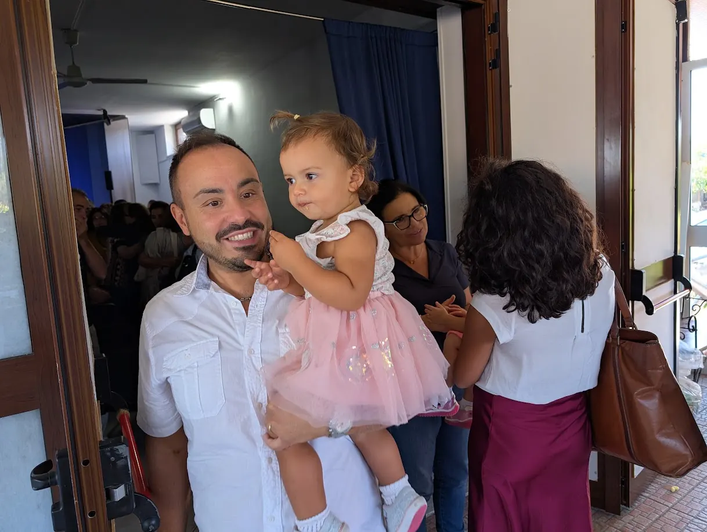
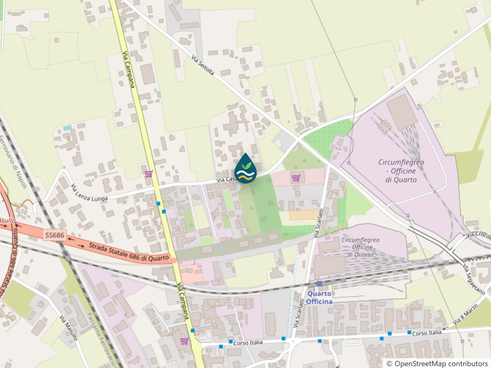
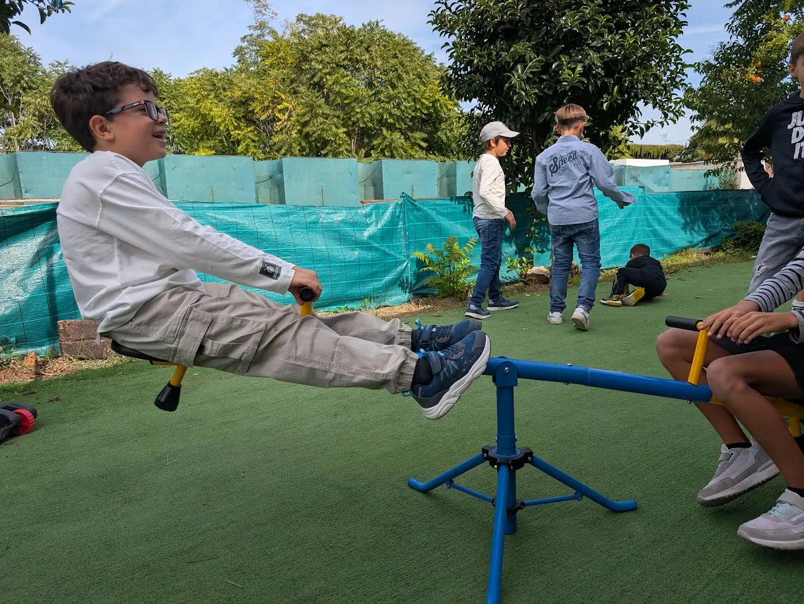

Benvenuto a casa.
Andare in una chiesa nuova può mettere un po' di emozione. Ecco tutto quello che c'è da sapere per la tua prima domenica con noi.
Come si svolge
Caffè e accoglienza
Ci incontriamo 15 minuti prima per un caffè. È il momento perfetto per fare conoscenza.
Lode e preghiera
Cantiamo canti moderni e preghiamo insieme. Puoi partecipare o semplicemente ascoltare.
La predicazione
Un messaggio dalla Bibbia, spiegato in modo chiaro e utile per la vita di tutti i giorni.
Restiamo insieme
Nessuno scappa via: ci fermiamo a parlare, conoscerci e, spesso, a ridere.
Dove e quando

I tuoi figli saranno in buone mani
Durante il culto i bambini partecipano alla scuola domenicale: storie della Bibbia, canti, giochi e attività pensate per la loro età.

Domande che potresti farti
Devo essere credente per venire?
Assolutamente no. Che tu abbia tante domande o nessuna, sei il benvenuto. Molti di noi sono arrivati proprio così.
Come devo vestirmi?
Come ti senti a tuo agio. C'è chi viene in jeans e chi più elegante: non conta l'abito, conti tu.
Quanto dura il culto?
Circa un'ora e mezza, tra canti, preghiera e predicazione. Poi chi vuole si ferma a chiacchierare.
C'è qualcosa per i bambini?
Sì! Durante il culto c'è la scuola domenicale, dove i bambini imparano la Bibbia in modo adatto alla loro età.
Mi chiederanno dei soldi?
No. Sei nostro ospite: nessuno ti chiederà nulla.
Posso venire con qualcuno?
Certo, porta pure amici e famiglia. E se preferisci, scrivici prima: qualcuno ti aspetterà all'ingresso.